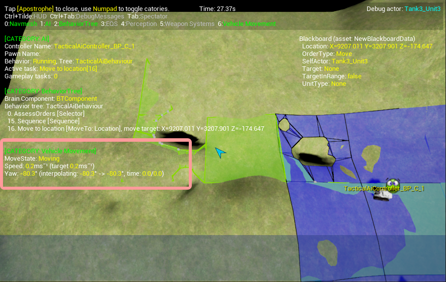

Gameplay Debugger: Quick, simple, re-usable
Contents
Introduction
This tutorial will help you quickly set up a re-usable C++ Gameplay Debugger Category , which can be used against any Actor Component without the need to rewrite code.
Once you've copied and pasted the new class into your game, you'll need to type one line in your Game Instance class to register your new category, and one function to spit out text from your Actor Component .
Overview
The UE4 Gameplay debugger provides a powerful real-time visual debugging layer to be overlayed on top of your game: https://docs.unrealengine.com/latest/INT/Gameplay/Tools/GameplayDebugger
You bring it up by pressing the apostrophe character ('). You've probably used it already to take advantage of the in-built gameplay debugger categories, such as NavMesh , Behaviour or EQS Queries .
However the Gameplay Debugger becomes really useful when instructed how to visualise your own proprietary classes. If you've read the page above, or looked at the source code, chances are it seems a bit heavy-going (and out-of-date!). Sure you can copy and paste all that code, switching out what you need. Sure you can do this for every single actor component you want to debug. But you'd much rather have something that works out of the box, typing a few lines of code right?
This implementation helps you do just that. In a minimum of two lines, you can have a new Gameplay Debugger Category set up and associated with a hotkey.

Requirements
Engine Version
Requires Unreal Engine 4.12 . The code below has been tested on version 4.14.3 , 4.15.3 & 4.16.2
Getting Started
Copy the two files below to create the new FGameplayDebuggerCategory class. Register and define your debug function and you're all set up.
GameplayDebuggerCategoryT.h
Copy and paste the following code and make a new file called GameplayDebuggerCategoryT.h . Ensure it's included in your UE4 game project (or in a library).
// GameplayDebuggerCategoryT.h
#pragma once
#include "GameplayDebuggerCategory.h"
// Gameplay debugger category to show information when the gameplay debugger is shown in game
// (apostrophe hotkey). This templatised class can be used for debugging any Actor Component.
// Instantiate this class by calling the static Register function from your GameInstance,
// implement a new function on your actor component with the signature:
// FString GetDebugInfoString()
template<typename T>
class FGameplayDebuggerCategoryT : public FGameplayDebuggerCategory
{
public:
FGameplayDebuggerCategoryT();
// Call this to register your category in the Gameplay Debugger
static void Register(const FName& Name, int Hotkey);
virtual void CollectData(APlayerController* OwnerPC, AActor* DebugActor) override;
virtual void DrawData(APlayerController* OwnerPC, FGameplayDebuggerCanvasContext& CanvasContext) override;
virtual void OnDataPackReplicated(int32 DataPackId) override;
protected:
static TSharedRef<FGameplayDebuggerCategory> MakeInstance();
struct FDebugData
{
TArray<FString> DebugStrings;
void Serialize(FArchive& archive);
}
DebugData;
};
#include "GameplayDebuggerCategoryT.inl"
GameplayDebuggerCategoryT.inl
Copy and paste the following code and make a new file called GameplayDebuggerCategoryT.inl . Ensure it's included in your UE4 game project (or in a library).
// GameplayDebuggerCategoryT.inl
#pragma once
#include "GameplayDebuggerCategoryT.h"
#include "GameUtils.h"
#include "GameplayDebugger.h"
#include "SharedPointerInternals.h"
///////////////////////////////////////////////////////////////////////////////
// FGameplayDebuggerCategoryT factory instantiation
///////////////////////////////////////////////////////////////////////////////
template<typename T>
inline FGameplayDebuggerCategoryT<T>::FGameplayDebuggerCategoryT()
{
SetDataPackReplication(&DebugData);
}
template<typename T>
inline void FGameplayDebuggerCategoryT<T>::Register(const FName& Name, int Hotkey)
{
const auto STATE_FLAGS = EGameplayDebuggerCategoryState::EnabledInGame;
auto& debugger = IGameplayDebugger::Get();
auto creationDelegate = IGameplayDebugger::FOnGetCategory::CreateStatic(&FGameplayDebuggerCategoryT<T>::MakeInstance);
debugger.RegisterCategory(Name, creationDelegate, STATE_FLAGS, Hotkey);
debugger.NotifyCategoriesChanged();
}
template<typename T>
inline TSharedRef<FGameplayDebuggerCategory> FGameplayDebuggerCategoryT<T>::MakeInstance()
{
return MakeShareable(new FGameplayDebuggerCategoryT<T>());
}
///////////////////////////////////////////////////////////////////////////////
// FGameplayDebuggerCategoryT
///////////////////////////////////////////////////////////////////////////////
template<typename T>
inline void FGameplayDebuggerCategoryT<T>::CollectData(APlayerController* Owner, AActor* DebugActor)
{
DebugData.DebugStrings.Empty();
if (!DebugActor) return;
for (UActorComponent* component : DebugActor->GetComponents())
{
T* componentCasted = Cast<T>(component);
if (componentCasted)
{
DebugData.DebugStrings.Add(componentCasted->GetDebugInfoString());
}
}
}
template<typename T>
inline void FGameplayDebuggerCategoryT<T>::OnDataPackReplicated(int32 DataPackId)
{
MarkRenderStateDirty();
}
template<typename T>
inline void FGameplayDebuggerCategoryT<T>::DrawData(APlayerController* OwnerPC, FGameplayDebuggerCanvasContext& CanvasContext)
{
for(const FString& debugInfoString : DebugData.DebugStrings)
{
CanvasContext.Printf(*debugInfoString);
}
}
///////////////////////////////////////////////////////////////////////////////
// FGameplayDebuggerCategoryT::FDebugData
///////////////////////////////////////////////////////////////////////////////
template<typename T>
inline void FGameplayDebuggerCategoryT<T>::FDebugData::Serialize(FArchive& archive)
{
for (auto debugString : DebugStrings)
{
archive << debugString;
}
}
Use the new Gameplay Debugger Category class
Implement GetDebugInfoString on your Actor Component
This is where the magic happens. You'll of course have to write your own GetDebugInfoString function on your own specialised Actor Component . A real-world example of how to use is however provided.
FString UVehicleMovementComponent::GetDebugInfoString() const
{
check(0 <= MoveState && MoveState < eMoveState::MOVE_STATE_COUNT);
const FString FORMAT_STRING = TEXT(
"{white}MoveState: {yellow}%s\n"
"{white}Speed: {yellow}%.1f{white}ms¯¹ (target {yellow}%.1f{white}ms¯¹)\n"
"{white}Yaw: %s\n");
FString DebugString = FString::Printf(*FORMAT_STRING,
*MoveStateNames[MoveState],
Speed, TargetSpeed,
*Yaw.GetDebugInfoString());
return DebugString;
}
Registration
All you've got to do now is template-instantiate your Gameplay Debugger Category , supplying your Actor Component as a template argument. Supply a Name and a Hotkey Assignment number for your new Gameplay Debugger Category. The example below puts this registration code into the constructor of your specialised GameInstance class, for simplicity. You might want to move this to a separate function, especially if you build up several categories.
UMyGameInstance::UMyGameInstance()
{
#if WITH_GAMEPLAY_DEBUGGER
FGameplayDebuggerCategoryT<UVehicleMovementComponent>::Register(TEXT("Vehicle Movement"), 6);
#endif
}
Conclusion
Once you have this set up in your project, to repeat for new debugger categories, you'll just have to implement a new GetDebugInfoString on your latest Actor Component , and write a new line of registration in your GameInstance . If you're like us, you'll find yourself using it again and again, simply because it's so easy when you need to quickly get some feedback from some erring logic.
The code provided in this tutorial is my own work, based on the existing engine classes; adhering to their conventions where possible. I place this in the public domain: you're welcome to use the code in your own codebase, without affiliation.